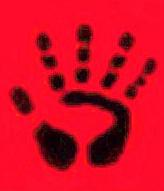

The Marauders.
Do what thou wilt shall be the whole of the Law.
-
 The Marauder Papers
by Shelby Babb
The Marauder Papers
by Shelby Babb
-
About Marauders, Marauder groups, Marauder NPCs, Marauder
beings and talismans.
-
Marauder
Magick
.
-
Some speculations on the nature of Marauder magick, and
some rotes.
-
Dr.
Anthony Cross
.
-
A Son of Ether Marauder, based on "Dark Matter" by Garfield
Reeves-Stevens.
-
Garath
by Alvin Yee.
-
A Marauder who believes he is a demon fighting for
Good.
-
Featherboy
by Chihiro Yamada.
-
A dreaming marauder.
-
434 ZHJ
-
The
Marauders of the Periphery
by Shelby Babb.
-
The Breakers of the Wall, the Acolytes of Vitae and the Eye
Scream Truckers, three groups of Marauders.
-
Proteus
by Shelby Babb.
-
A Technocracy created being, holding enormous possibilities
for the Marauders.
-
Mythologae
.
-
Mythological beings, some of which are allied with the
Marauders.
-
 The Temple of the Raging God
The Temple of the Raging God
-
An awesome being worshipped by the Marauders.
Tarot Card:
The
Tower
Recent
Changes.
 Back to Anders Mage Page
Back to Anders Mage Page
Anders Main Page
Anders Sandberg / nv91-asa@nada.kth.se